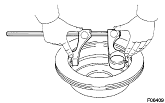
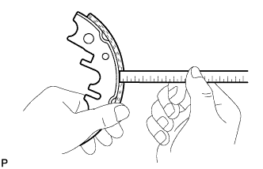
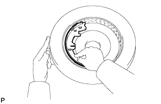

СТОЯНОЧНЫЙ ТОРМОЗ В СБОРЕ > ПРОВЕРКА |
| 1. ИЗМЕРЬТЕ ВНУТРЕННИЙ ДИАМЕТР ТОРМОЗНОГО ДИСКА |
|  |
Измерьте внутренний диаметр диска с помощью калибра тормозного барабана или аналогичного приспособления.
| 2. ИЗМЕРЬТЕ ТОЛЩИНУ ФРИКЦИОННОЙ НАКЛАДКИ КОЛОДОК СТОЯНОЧНОГО ТОРМОЗА |
|  |
Измерьте толщину фрикционной накладки колодки с помощью линейки.
| 3. ПРОВЕРЬТЕ КОНТАКТ ТОРМОЗНОГО ДИСКА И НАКЛАДКИ КОЛОДОК СТОЯНОЧНОГО ТОРМОЗА |
|  |
Нанесите мел на внутреннюю поверхность диска. Прижмите фрикционную накладку тормозной колодки к диску, подвигайте ее и убедитесь, что тормозная колодка и тормозной диск находятся в полном контакте (мел переносится на всю фрикционную накладку тормозной колодки).
При плохом контакте между диском и накладкой тормозной колодки восстановите ее с помощью машинки для шлифовки тормозных колодок или замените тормозную колодку в сборе.